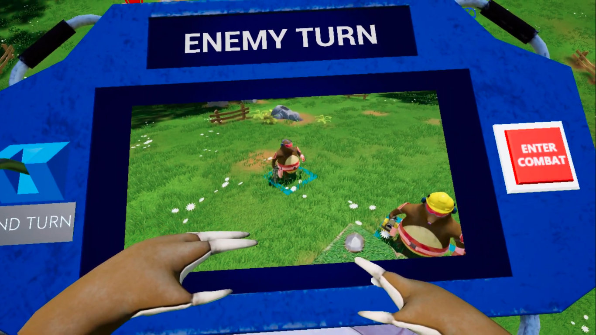
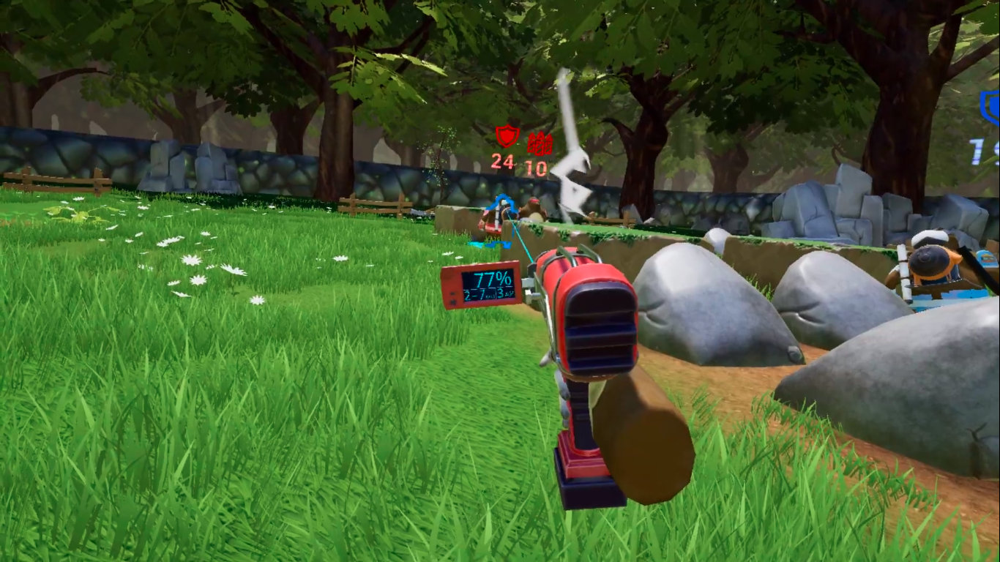
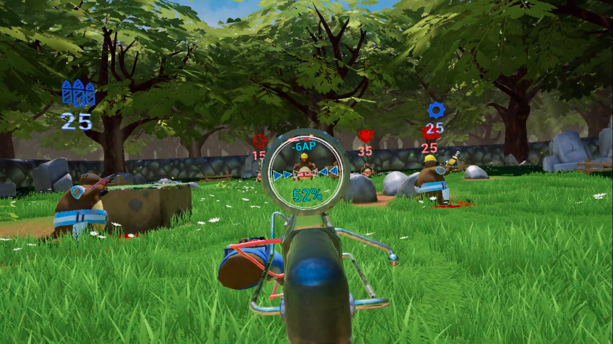
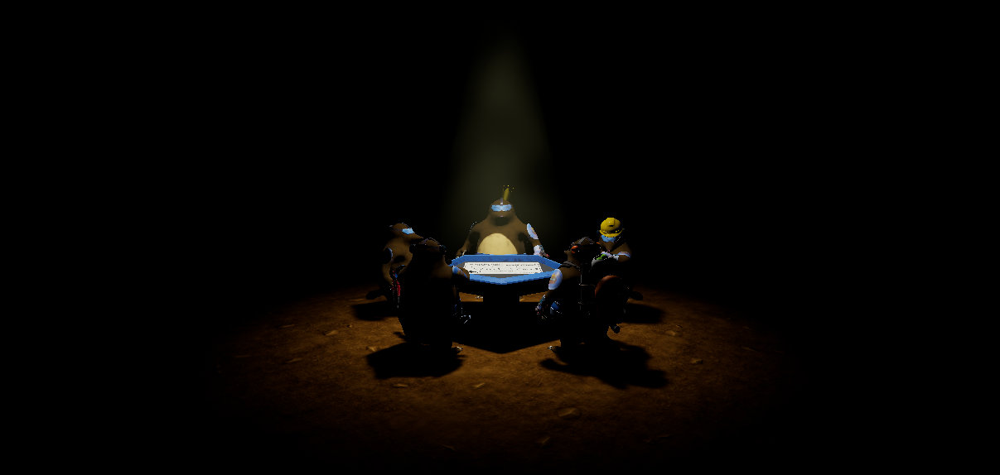
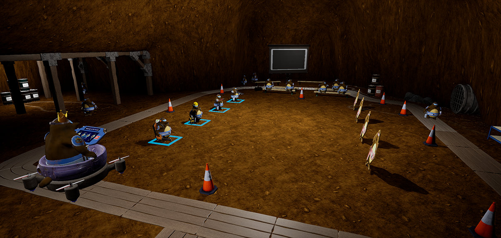
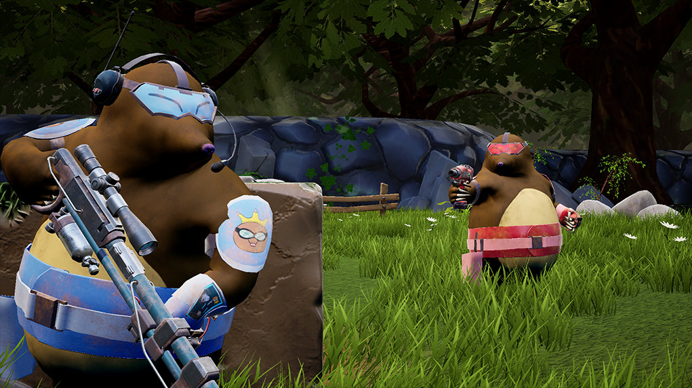

King of the Drills

King of the Drills is a tactical turn-based strategy game built for Virtual Reality.
What I built
- A grid-based system for tactical gameplay.
- A status effect system for designers to utilise and extend.
- An objective system for designers to utilise and extend.
- Extendable weapons and gear systems intended for use in strategy games.
- Various in-game interactions for VR.
- Working closely with artists to achieve better optimisation whilst implementing assets.
Screenshots





